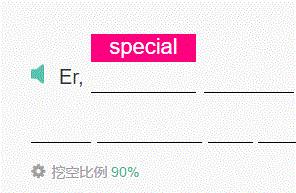
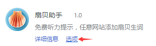
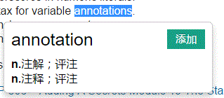
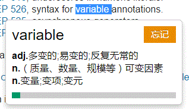

使用说明
免费听力提示
在听力填空时，使用快捷键（默认：8）会出现免费听力提示。

可以在
选项
中设置快捷键和配色。

取词翻译并添加扇贝生词
任意网站（除扇贝网和少数网站外）双击取词，或者选中后按Ctrl键取词，可以获取扇贝网释义。
如果该单词不在用户词库中，可以添加：

如果该单词在用户词库中，会显示熟悉度（并非所有的都有），并可以选择忘记以重背该单词：

当然，这需要进行授权才可以。点击软件图标即可进行授权。
项目地址